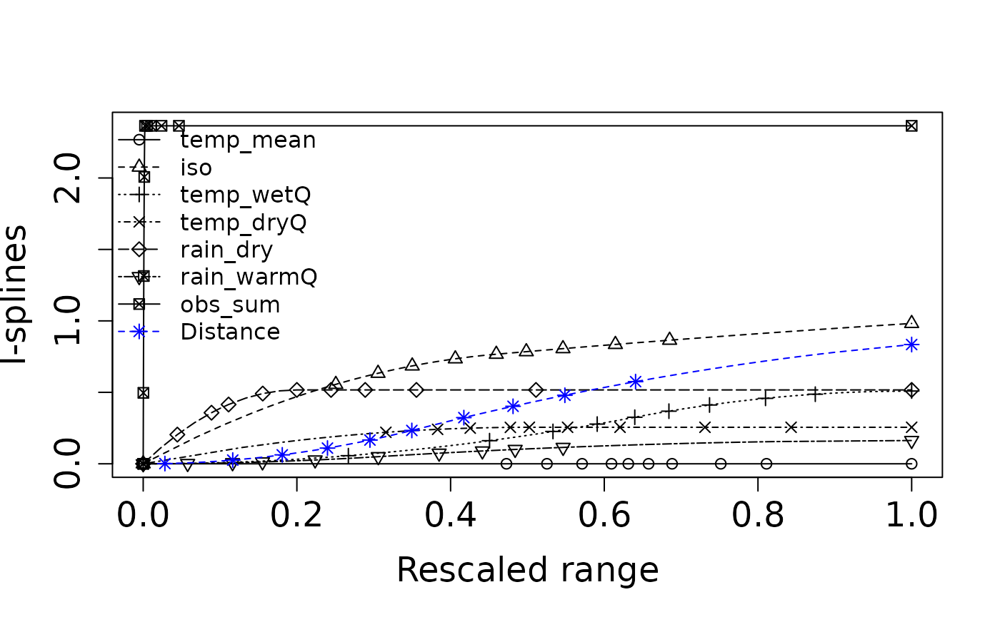
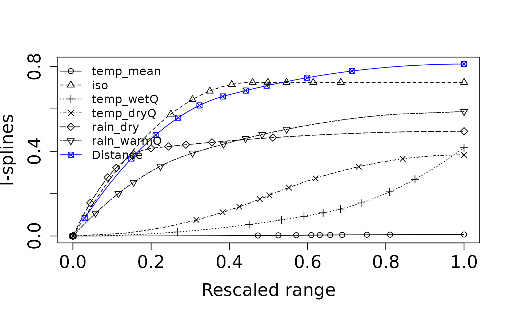

dissmapr
Measuring Multi-Site Compositional Turnover with Zeta Diversity
This vignette introduces zeta diversity as a multi-site measure of compositional change. Instead of considering only pairwise differences between sites, zeta diversity describes how species are shared across increasing numbers of sites, offering a broader view of biodiversity turnover.
To keep the example reproducible and quick to run, we use a small set
of example objects bundled with dissmapr. The setup chunk
below loads the required packages, reads the bundled data snapshot, and
unpacks the environmental and presence-absence data needed for the
zeta-diversity examples.
# Load the packages used in this vignette.
library(dissmapr)
library(zetadiv)
# Load the bundled example data snapshot.
# This keeps the vignette reproducible and avoids requiring external downloads.
inputs = readRDS(system.file("extdata", "dissmapr_vignettes.rds", package = "dissmapr"))
# Unpack the example objects used below.
grid_env = inputs$grid_env # Grid-level environmental data
env_vars_reduced = inputs$env_vars_reduced # Selected environmental variables
grid_spp_pa = inputs$grid_spp_pa # Presence-absence species data
sp_cols = inputs$sp_cols # Species column names1. Zeta diversity in dissmapr: a
multi-site view of compositional change
Classical β-diversity evaluates how species composition differs between pairs of sites, but many ecological questions, like how wide-ranging species structure whole landscapes, require a perspective that spans three, four or more assemblages at once. Zeta diversity (ζ-diversity) meets this need by counting the number of species jointly shared by i sites (ζ₁, ζ₂, … ζᵢ). As i increases, ζ declines; the shape of that decline summarises how rarity and commonness are distributed across the region. See Guillaume Latombe (2015). zetadiv: Functions to Compute Compositional Turnover Using Zeta Diversity. R package version 1.3.0, https://cran.r-project.org/web/packages/zetadiv. Accessed 30 Jun. 2025.
dissmapr embeds the zetadiv toolkit so
that automated pipelines of compositional dissimilarity can incorporate
higher-order turnover metrics alongside conventional pairwise indices.
Four core functions are central:
-
Expectation of ζ-decline using
Zeta.decline.ex(): Calculates the exact mean ζ for successive orders (ζ₁ … ζₖ) when the site × species matrix is small enough for exhaustive enumeration, giving the theoretical baseline against which observed patterns can be compared function details.
-
Monte-Carlo ζ-decline using
Zeta.decline.mc(): Uses random subsampling to approximate the same decline in large matrices where exhaustive combinations are infeasible, trading a small sampling error for orders-of-magnitude speed-ups function details.
-
ζ distance-decayusing
Zeta.ddecays(): Fits a distance–decay curve for several ζ orders simultaneously, revealing how rapidly shared species drop away with spatial separation and whether higher-order overlap is lost faster or slower than pairwise similarity function details.
-
Multi-site GDM using
Zeta.msgdm(): Extends Generalised Dissimilarity Modelling to multi-site similarity. For a chosen order i it regresses ζᵢ against environmental gradients and geographic distance using GLMs, GAMs or shape-constrained splines, quantifying how each predictor controls the retention of shared species across landscapes function details.
Why this matters for automated turnover analysis
-
Scale-explicit turnover: ζ-decline distinguishes
processes that shape local richness (ζ₁) from those structuring regional
overlap (ζ₄, ζ₅ …), adding nuance to the pairwise β view.
-
Process insight: An exponential ζ-decline
suggests stochastic assembly while a power-law decline implies
niche structure or dispersal limitations.
-
Predictive mapping:
Zeta.msgdm()generates response surfaces for ζᵢ across continuous environmental space, enablingdismaprto project multi-site similarity under current or future scenarios.
-
Integrated workflow: Within
dismaprthe outputs (Zeta.decline.*,Zeta.ddecays(),Zeta.msgdm()) slot directly into the same site-by-environment matrices and raster stacks already produced for GLM/GAM pipelines, ensuring a seamless transition from data wrangling to advanced turnover modelling.
In summary, ζ-diversity counts the species that an entire network of sites share. Imagine moving from one natural area to the next across a region. In the first few nearby places most species still overlap, but as you add more, especially those separated by greater distance or harsher conditions, the list of species found everywhere quickly narrows. ζ-diversity tracks how fast that shared list shrinks, highlighting which species are resilient and widespread versus those confined to only a handful of sites. The faster the shared-species list shrinks, the clearer it becomes which species are robust and occur almost everywhere, and which persist only in a few isolated spots. Viewing many sites at once exposes conservation gaps that simple pairwise comparisons can overlook.
The next sections offer a simple, step-by-step guide to spot where shared biodiversity is weakest and direct protection where it’s needed most.
2. Expectation curve for ζ-diversity decline using
zetadiv::Zeta.decline.ex()
Zeta.decline.ex() calculates the theoretical number of
species that should be shared by 1, 2, … k sites (orders 1–15 here)
using a closed-form formula based solely on each species’ occupancy
frequency. Because no resampling is involved, the output is an exact
expectation of how ζ-diversity ought to fall as more sites are
considered, assuming site identity plays no role. The function also fits
exponential and power-law models to the expected curve, yielding
parameters and fit statistics that provide a baseline against which
observed or Monte-Carlo ζ-decline patterns can be evaluated.
op = par(no.readonly = TRUE)
on.exit(par(op), add = TRUE)
par(mfrow = c(1,1), mar = c(4,4,1,1), oma = c(0,0,0,0))
set.seed(123)
zeta_decline_ex = zetadiv::Zeta.decline.ex(grid_spp_pa[,7:ncol(grid_spp_pa)], # Only species columns
orders = 1:15, plot = FALSE)
zetadiv::Plot.zeta.decline(zeta_decline_ex, sd.plot = TRUE)
- Panel 1 (Zeta diversity decline): Shows how rapidly species that are common across multiple sites decline as you look at groups of more and more sites simultaneously (increasing zeta order). The sharp drop means fewer species are shared among many sites compared to just a few.
- Panel 2 (Ratio of zeta diversity decline): Illustrates the proportion of shared species that remain as the number of sites compared increases. A steeper curve indicates that common species quickly become rare across multiple sites.
- Panel 3 (Exponential regression): Tests if the decline in shared species fits an exponential decrease. A straight line here indicates that species commonness decreases rapidly and consistently as more sites are considered together. Exponential regression represents stochastic assembly (randomness determining species distributions).
- Panel 4 (Power law regression): Tests if the decline follows a power law relationship. A straight line suggests that the loss of common species follows a predictable pattern, where initially many species are shared among fewer sites, but rapidly fewer are shared among larger groups. Power law regression represents niche-based sorting (environmental factors shaping species distributions).
Interpretation: The near‐perfect straight line in the exponential panel (high R²) indicates that an exponential model provides the most parsimonious description of how species shared across sites decline as you add more sites—consistent with a stochastic, memory-less decline in common species. A power law will also fit in broad strokes, but deviates at high orders, suggesting exponential decay is the better choice for these data.
3. Empirical ζ-diversity decline via Monte-Carlo using
zetadiv::Zeta.decline.mc()
Zeta.decline.mc() estimates how the number of species
shared by 1, 2, … k sites drops when exhaustive combinations are
impractical. It repeatedly draws random sets of sites (Monte-Carlo
sampling), averages the shared-species count for each order, and reports
both the mean and its variability. The resulting curve is then fitted
with exponential and power-law models, providing parameter estimates and
confidence bands that capture real-world turnover while accounting for
sampling uncertainty. In other words, a sharp drop in
the curve means species change quickly from place to place
(communities are unique), while a gentle drop
means many species are found in most places (communities are
similar).
set.seed(123)
zeta_mc_utm = zetadiv::Zeta.decline.mc(grid_spp_pa[,-(1:6)], # Different way to get only species columns
# grid_env[, c("centroid_lon", "centroid_lat")], # WGS84 - decimal degrees
grid_env[, c("x_aea", "y_aea")], # AEA - meters
orders = 1:15,
sam = 100, # Sample size
NON = TRUE,
normalize = "Jaccard")
- Panel 1 (Zeta diversity decline): Rapidly declining zeta diversity, similar to previous plots, indicates very few species remain shared across increasingly larger sets of sites, emphasizing strong species turnover and spatial specialization.
- Panel 2 (Ratio of zeta diversity decline): More irregular fluctuations suggest a spatial effect: nearby sites might occasionally share more species by chance due to proximity. The spikes mean certain groups of neighboring sites have higher-than-average species overlap.
- Panel 3 & 4 (Exponential and Power law regressions): Both remain linear, clearly indicating the zeta diversity declines consistently following a predictable spatial pattern. However, the exact pattern remains similar to previous cases, highlighting that despite spatial constraints, common species become rare quickly as more sites are considered.
Interpretation: This result demonstrates clear spatial structuring of biodiversity i.e. species are locally clustered, not randomly distributed across the landscape. Spatial proximity influences which species co-occur more frequently. In practice
Zeta.decline.mc()is used for real‐world biodiversity data—both because it scales and because the Monte Carlo envelope is invaluable when ζₖ gets noisier at higher orders.
4. ζ-diversity distance-decay (orders 2–8) using
zetadiv::Zeta.ddecays()
Zeta.ddecays()measures the drop in shared
species as geographic distance increases. In this example it
evaluates orders 2 through 8 by first binning site
pairs (or groups) into many distance classes, then computing the average
number of species they share in each class, and finally fitting an
exponential distance-decay model via a generalized
linear regression. The function returns the slope and intercept of each
fitted curve, goodness-of-fit statistics, and diagnostic plots that
together show how quickly multisite similarity breaks down with
space at different zeta orders.
# Calculate Zeta.ddecays
set.seed(123)
zeta_decays = zetadiv::Zeta.ddecays(#grid_env[, c("centroid_lon", "centroid_lat")], # WGS84 - decimal degrees
grid_env[, c("x_aea", "y_aea")], # AEA - meters
grid_spp_pa[,-(1:6)],
sam = 1000, # Sample size
orders = 2:8,
plot = TRUE,
confint.level = 0.95
)
#> [1] 2
#> [1] 3
#> [1] 4
#> [1] 5
#> [1] 6
#> [1] 7
#> [1] 8This plot shows how zeta diversity (remember, it’s a metric that captures shared species composition among multiple sites) changes with spatial distance across different orders of zeta (i.e., the number of sites considered at once).
- On the x-axis, we have the order of zeta (from 2 to 8).
For example, zeta order 2 looks at pairs of sites, order 3 at triplets, etc.- On the y-axis, we see the slope of the relationship between zeta diversity and distance (i.e., how quickly species similarity declines with distance).
- A negative slope means that sites farther apart have fewer species in common — so there’s a clear distance decay of biodiversity.
- A slope near zero means distance doesn’t strongly affect how many species are shared among sites.
Interpretation: When you look at just two or three sites, distance really matters because sites far apart share far fewer species, so the decay curve is steep. Once you include four or more sites, that curve flattens out: most widespread species still overlap no matter the distance, so spatial separation has little effect. The tighter confidence bands at higher orders show these broader‐scale patterns are more reliable because they average over many sites. In plain terms, rare or localized species drive strong turnover at small scales, but a core of common species holds communities together across larger regions.
5. Model drivers of compositional turnover with
zetadiv::Zeta.msgdm()
Zeta.msgdm() extends Generalised Dissimilarity
Modelling (GDM) from simple pairwise similarity to any order of
ζ-diversity. Order 2 is, by definition, the pairwise case as it counts
the species shared by two sites. In other words, the results are
directly comparable to conventional β-diversity models. The advantage of
the ζ framework is that you can raise the order (ζ₃, ζ₄, …) with the
same function to reveal higher-order patterns without changing
tools.
Here we fit an order-2 model to ask:
- How strongly do climate, geography, or other predictors control the
chance that two sites share species?
- How does that control change along each environmental gradient?
Zeta.msgdm() proceeds in three
stages:
-
Sampling: draws 1 000 random site pairs
(
sam = 1000) to keep computation tractable.
-
Normalisation: converts order-2 ζ counts to a
Jaccard similarity (
normalize = "Jaccard") so coefficients range between 0 and 1.
-
Regression: fits an I-spline MSGDM
(
reg.type = "ispline") that separates monotonic environmental effects from Euclidean geographic distance (distance.type = "Euclidean").
The fitted model (zeta2) contains partial I-splines for
every predictor (note: higher splines imply stronger turnover per unit
change).
set.seed(246)
# Fit order-2 MSGDM on the presence–absence matrix and reduced covariate set
zeta2 = zetadiv::Zeta.msgdm(
grid_spp_pa[,-(1:6)], # species matrix (rows = sites, cols = spp)
env_vars_reduced, # decorrelated environmental variables
# env_vars_reduced[,-7], # without sampling effort included
grid_env[, c("centroid_lon", "centroid_lat")], # longitude & latitude (°)
# grid_env[, c("x_aea", "y_aea")], # longitude & latitude (meters)
sam = 2000,
order = 2,
distance.type = "Euclidean",
normalize = "Jaccard",
reg.type = "ispline"
)
# Extract and plot the fitted I-splines
# splines = Return.ispline(zeta2, env_vars_reduced[,-7], distance = TRUE) # Without sampling effort
splines = Return.ispline(zeta2, env_vars_reduced, distance = TRUE)
Plot.ispline(splines, distance = TRUE)
General Interpretation:
-
I-spline height: The taller the curve, the more a
variable drives species turnover.
-
Curve shape: Steep early rises mark thresholds
where small environmental changes cause large compositional shifts;
flatter tails suggest saturation.
- Distance spline: Shows the residual spatial decay once environmental effects are removed, highlighting dispersal limits or unmeasured factors.
By isolating each driver’s effect, this MSGDM pinpoints which gradients most erode shared biodiversity and where management actions could most effectively slow that loss.
Specific Interpretation: This figure shows the fitted I-splines from a multi-site generalized dissimilarity model (via
Zeta.msgdm), which represent the partial, monotonic relationship between each predictor and community turnover (ζ-diversity) over its 0–1 “rescaled” range. A few key take-aways:
- Distance (blue asterisks) has by far the largest I-spline amplitude—rising from ~0 at zero distance to ~0.05 at the maximum. That tells us spatial separation is the strongest driver of multi‐site turnover, and even small increases in distance yield a substantial drop in shared species.
- Sampling intensity (
obs_sum, open circles) comes next, with a gentle but steady rise to ~0.045. This indicates that sites with more observations tend to share more species (or, conversely, that incomplete sampling can depress apparent turnover).- Precipitation variables: Rain in the warm quarter (
rain_warmQ, squares) and Rain in the dry quarter (rain_dry, triangles-down) both show moderate effects (I-spline heights ~0.02–0.03). This means differences in seasonal rainfall regimes contribute noticeably to changes in community composition.- Temperature metrics: Mean temperature (
temp_mean, triangles-up), Wet‐quarter temperature (temp_wetQ, X’s), Dry‐quarter temperature (temp_dryQ, diamonds), and the isothermality index (iso, plus signs) all have very low, almost flat I-splines (max heights ≲0.01). In other words, these thermal variables explain very little additional turnover once you’ve accounted for distance and rainfall.Key point: Spatial distance is the dominant structuring factor in these data i.e. sites further apart share markedly fewer species. After accounting for that, differences in observation effort and, to a lesser degree, seasonal rainfall still shape multisite community similarity. Temperature and seasonality metrics, by contrast, appear to have only a minor independent influence on zeta‐diversity in this landscape.
# Deviance explained summary results
with(summary(zeta2$model), 1 - deviance/null.deviance)
#> [1] 0.3265057
# [1] 0.3733073
# 0.3733073 means that approximately 37% of the variability in the response
# variable is explained by your model. This is relatively low, suggesting that the
# model may not be capturing much of the underlying pattern in the data.
# Model summary results
summary(zeta2$model)
#>
#> Call:
#> glm.cons(formula = zeta.val ~ ., family = family, data = data.tot,
#> control = control, method = "glm.fit.cons", cons = cons,
#> cons.inter = cons.inter)
#>
#> Coefficients:
#> Estimate Std. Error z value Pr(>|z|)
#> (Intercept) -2.16968 0.59939 -3.620 0.000295 ***
#> temp_mean1 0.00000 4.21534 0.000 1.000000
#> temp_mean2 0.00000 1.32559 0.000 1.000000
#> temp_mean3 0.00000 1.70928 0.000 1.000000
#> iso1 -0.66083 1.51472 -0.436 0.662639
#> iso2 -0.23047 0.88345 -0.261 0.794186
#> iso3 -0.09082 1.47082 -0.062 0.950764
#> temp_wetQ1 0.00000 1.15499 0.000 1.000000
#> temp_wetQ2 -0.50916 0.93824 -0.543 0.587353
#> temp_wetQ3 0.00000 1.44449 0.000 1.000000
#> temp_dryQ1 -0.25546 3.76827 -0.068 0.945951
#> temp_dryQ2 0.00000 1.17904 0.000 1.000000
#> temp_dryQ3 0.00000 1.19974 0.000 1.000000
#> rain_dry1 -0.51688 0.77003 -0.671 0.502061
#> rain_dry2 0.00000 0.85157 0.000 1.000000
#> rain_dry3 0.00000 1.09211 0.000 1.000000
#> rain_warmQ1 0.00000 0.88632 0.000 1.000000
#> rain_warmQ2 -0.16285 1.06003 -0.154 0.877907
#> rain_warmQ3 0.00000 1.71132 0.000 1.000000
#> obs_sum1 -2.36497 0.52951 -4.466 7.96e-06 ***
#> obs_sum2 0.00000 1.32135 0.000 1.000000
#> obs_sum3 0.00000 1.88062 0.000 1.000000
#> distance1 0.00000 0.92268 0.000 1.000000
#> distance2 -0.68238 1.27321 -0.536 0.591992
#> distance3 -0.15209 2.11481 -0.072 0.942668
#> ---
#> Signif. codes: 0 '***' 0.001 '**' 0.01 '*' 0.05 '.' 0.1 ' ' 1
#>
#> (Dispersion parameter for binomial family taken to be 1)
#>
#> Null deviance: 125.418 on 1999 degrees of freedom
#> Residual deviance: 84.468 on 1975 degrees of freedom
#> AIC: 137.85
#>
#> Number of Fisher Scoring iterations: 76. Uneven sampling can disguise the true drivers of biodiversity
With sampling effort (obs_sum)
included, all sites with lots of records suddenly look far more alike
than poorly sampled ones, and the climate curves flatten, and distance
drops too.
# Fit order-2 MSGDM on the presence–absence matrix and reduced covariate set
set.seed(123) # set.seed to generate exactly the same random results i.e. sam=100
zeta2_noEff = zetadiv::Zeta.msgdm(
grid_spp_pa[,-(1:6)], # species matrix (rows = sites, cols = spp)
# env_vars_reduced, # decorrelated environmental variables
env_vars_reduced[,-7], # without sampling effort included
grid_env[, c("centroid_lon", "centroid_lat")], # longitude & latitude (°)
# grid_env[, c("x_aea", "y_aea")], # longitude & latitude (meters)
sam = 1000,
order = 2,
distance.type = "Euclidean",
normalize = "Jaccard",
reg.type = "ispline"
)
# Extract and plot the fitted I-splines
splines_noEff = Return.ispline(zeta2_noEff, env_vars_reduced[,-7], distance = TRUE) # Without sampling effort
Plot.ispline(splines_noEff, distance = TRUE)
Without sampling effort (obs_sum)
temperature and rainfall curves climb high and fast: climate looks like
the main reason sites stop sharing species. Distance (blue line) still
matters, but less than several climate variables.
# Deviance explained summary results
with(summary(zeta2_noEff$model), 1 - deviance/null.deviance)
#> [1] 0.08242887
# [1] 0.09495599
# 0.09495599 means that approximately 1% of the variability in the response
# variable is explained by your model. This is relatively low, suggesting that the
# model may not be capturing much of the underlying pattern in the data.
# Model summary results
summary(zeta2_noEff$model)
#>
#> Call:
#> glm.cons(formula = zeta.val ~ ., family = family, data = data.tot,
#> control = control, method = "glm.fit.cons", cons = cons,
#> cons.inter = cons.inter)
#>
#> Coefficients:
#> Estimate Std. Error z value Pr(>|z|)
#> (Intercept) -2.305665 0.721583 -3.195 0.0014 **
#> temp_mean1 0.000000 5.272996 0.000 1.0000
#> temp_mean2 -0.007144 1.832550 -0.004 0.9969
#> temp_mean3 0.000000 2.455501 0.000 1.0000
#> iso1 -0.725358 1.979856 -0.366 0.7141
#> iso2 0.000000 1.361781 0.000 1.0000
#> iso3 0.000000 1.855354 0.000 1.0000
#> temp_wetQ1 0.000000 1.590499 0.000 1.0000
#> temp_wetQ2 -0.171044 1.323550 -0.129 0.8972
#> temp_wetQ3 -0.245516 2.004941 -0.122 0.9025
#> temp_dryQ1 0.000000 4.616254 0.000 1.0000
#> temp_dryQ2 -0.383231 1.607844 -0.238 0.8116
#> temp_dryQ3 0.000000 1.705142 0.000 1.0000
#> rain_dry1 -0.393946 1.102893 -0.357 0.7209
#> rain_dry2 -0.100671 1.235874 -0.081 0.9351
#> rain_dry3 0.000000 1.648886 0.000 1.0000
#> rain_warmQ1 -0.305178 1.152042 -0.265 0.7911
#> rain_warmQ2 -0.282474 1.498679 -0.188 0.8505
#> rain_warmQ3 0.000000 2.172401 0.000 1.0000
#> distance1 -0.566301 1.239956 -0.457 0.6479
#> distance2 -0.245639 1.595763 -0.154 0.8777
#> distance3 0.000000 2.453409 0.000 1.0000
#> ---
#> Signif. codes: 0 '***' 0.001 '**' 0.01 '*' 0.05 '.' 0.1 ' ' 1
#>
#> (Dispersion parameter for binomial family taken to be 1)
#>
#> Null deviance: 65.233 on 999 degrees of freedom
#> Residual deviance: 59.856 on 978 degrees of freedom
#> AIC: 106.99
#>
#> Number of Fisher Scoring iterations: 7With sampling effort removed the model explains only ≈ 8% of the deviance, compared to 37%. In other words, after discounting chance, less than one-tenth of the variation in shared-species counts is captured by climate and distance alone, confirming that survey effort had been the primary driver of the much higher explanatory power in the full model.
Key point: Uneven sampling can hide the real drivers of biodiversity. Without accounting for effort, the model attributes most turnover to climate. Adding effort shows that well-surveyed sites appear more similar simply because thorough searches record more species, while lightly sampled sites miss many and seem distinct. Correcting for effort is essential; only then can we see how climate and distance truly shape species turnover.
sessionInfo()
#> R version 4.6.1 (2026-06-24)
#> Platform: x86_64-pc-linux-gnu
#> Running under: Ubuntu 24.04.4 LTS
#>
#> Matrix products: default
#> BLAS: /usr/lib/x86_64-linux-gnu/openblas-pthread/libblas.so.3
#> LAPACK: /usr/lib/x86_64-linux-gnu/openblas-pthread/libopenblasp-r0.3.26.so; LAPACK version 3.12.0
#>
#> locale:
#> [1] LC_CTYPE=C.UTF-8 LC_NUMERIC=C LC_TIME=C.UTF-8
#> [4] LC_COLLATE=C.UTF-8 LC_MONETARY=C.UTF-8 LC_MESSAGES=C.UTF-8
#> [7] LC_PAPER=C.UTF-8 LC_NAME=C LC_ADDRESS=C
#> [10] LC_TELEPHONE=C LC_MEASUREMENT=C.UTF-8 LC_IDENTIFICATION=C
#>
#> time zone: UTC
#> tzcode source: system (glibc)
#>
#> attached base packages:
#> [1] stats graphics grDevices datasets utils methods base
#>
#> other attached packages:
#> [1] zetadiv_1.3.0 scam_1.2-22 dissmapr_0.2.0
#>
#> loaded via a namespace (and not attached):
#> [1] DBI_1.3.0 pbapply_1.7-4 geodata_0.6-9
#> [4] pROC_1.19.0.1 glm2_1.2.1 permute_0.9-10
#> [7] rlang_1.3.0 magrittr_2.0.5 otel_0.2.0
#> [10] e1071_1.7-17 compiler_4.6.1 mgcv_1.9-4
#> [13] systemfonts_1.3.2 vctrs_0.7.3 maps_3.4.3
#> [16] reshape2_1.4.5 stringr_1.6.0 pkgconfig_2.0.3
#> [19] fastmap_1.2.0 rmarkdown_2.31 prodlim_2026.03.11
#> [22] ragg_1.5.2 purrr_1.2.2 xfun_0.60
#> [25] cachem_1.1.0 jsonlite_2.0.0 recipes_1.3.3
#> [28] terra_1.9-34 parallel_4.6.1 cluster_2.1.8.2
#> [31] R6_2.6.1 bslib_0.11.0 stringi_1.8.7
#> [34] RColorBrewer_1.1-3 parallelly_1.48.0 rpart_4.1.27
#> [37] estimability_2.0.0 lubridate_1.9.5 jquerylib_0.1.4
#> [40] Rcpp_1.1.2 iterators_1.0.14 knitr_1.51
#> [43] future.apply_1.20.2 fields_17.3 zoo_1.8-15
#> [46] nnls_1.6 Matrix_1.7-5 splines_4.6.1
#> [49] nnet_7.3-20 timechange_0.4.0 tidyselect_1.2.1
#> [52] yaml_2.3.12 vegan_2.7-5 timeDate_4052.112
#> [55] codetools_0.2-20 listenv_1.0.0 lattice_0.22-9
#> [58] tibble_3.3.1 plyr_1.8.9 withr_3.0.3
#> [61] S7_0.2.2 geosphere_1.6-8 evaluate_1.0.5
#> [64] sf_1.1-1 future_1.75.0 desc_1.4.3
#> [67] survival_3.8-6 units_1.0-1 proxy_0.4-29
#> [70] mclust_6.1.3 pillar_1.11.1 KernSmooth_2.23-26
#> [73] corrplot_0.95 renv_1.1.4 foreach_1.5.2
#> [76] stats4_4.6.1 generics_0.1.4 ggplot2_4.0.3
#> [79] scales_1.4.0 xtable_1.8-8 globals_0.19.1
#> [82] class_7.3-23 glue_1.8.1 clValid_0.7
#> [85] emmeans_2.0.4 tools_4.6.1 data.table_1.18.4
#> [88] ModelMetrics_1.2.2.2 gower_1.0.2 mvtnorm_1.4-2
#> [91] fs_2.1.0 dotCall64_1.2 grid_4.6.1
#> [94] tidyr_1.3.2 ipred_0.9-15 nlme_3.1-169
#> [97] patchwork_1.3.2 cli_3.6.6 rappdirs_0.3.4
#> [100] textshaping_1.0.5 NbClust_3.0.1 spam_2.11-4
#> [103] viridisLite_0.4.3 lava_1.9.2 dplyr_1.2.1
#> [106] gtable_0.3.6 sass_0.4.10 digest_0.6.39
#> [109] classInt_0.4-11 caret_7.0-1 ggrepel_0.9.8
#> [112] htmlwidgets_1.6.4 farver_2.1.2 entropy_1.3.2
#> [115] htmltools_0.5.9 pkgdown_2.2.1 lifecycle_1.0.5
#> [118] factoextra_2.1.0 hardhat_1.4.3 httr_1.4.8
#> [121] MASS_7.3-65